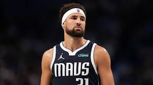
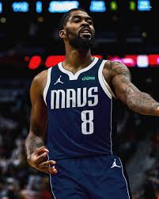
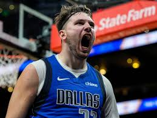

Dallas Mavericks Basketball
The 2024-2025 season for the Dallas Mavericks begins with high expectations, following a summer of key roster changes aimed at improving the team's competitiveness. With Luka Dončić leading the charge, the Mavs are hoping to bounce back after falling short of playoff contention in recent years. Dončić, who has established himself as one of the NBA's brightest stars, will again be the focal point of the offense, and the team’s success largely hinges on his ability to maintain his elite play while staying healthy. His partnership with Kyrie Irving, who was acquired mid-season in 2023, continues to be a work in progress, but the Mavs hope a full season together will lead to better chemistry.
Offseason
Dallas made several moves in the offseason to enhance its roster depth and balance, addressing a perceived weakness in the frontcourt. The team added key players, including a mix of veterans and emerging talents, to provide more support for the superstar duo. A major focus was improving the defensive side of the ball, an area where the Mavericks have struggled in recent seasons. Their ability to guard the perimeter and defend without fouling will be crucial in their bid to return to playoff contention. 
Klay Thompson
Klay Thompson
One of the most significant additions for the Mavericks is Grant Williams, a versatile forward who comes over from the Boston Celtics. Known for his defense and three-point shooting, Williams brings a much-needed toughness and an ability to guard multiple positions. His presence could help balance the offensive firepower of Dončić and Irving with a more reliable defensive effort. Additionally, the Mavericks hope young players like Jaden Hardy, who they brought in through trade or the draft, can develop into key contributors as the season progresses.
What Works
The Mavericks' offense remains one of the most potent in the league, but the team is still working to find the right balance between pace and execution. Dončić and Irving’s ability to operate together in the backcourt will be one of the central storylines of the season. Coach Jason Kidd, who has been with the team since 2021, will continue to focus on finding the right rotations and offensive systems to maximize the skills of his star players. The offense runs through Dončić, but there will be a concerted effort to get Irving more involved early in games to establish a more dynamic flow.- Scoring
- Luka Doncic
- Kyrie Irving
- Klay Thompson
- Defense
- PJ Washington
- Dereck Lively
- Naji Marshall
- Passing
- Luka Doncic
- Kyrie Irving
- Naji Marshall
- Rebounding
- Luka Doncic
- PJ Washington
- Dereck Lively
Mavs Defense

Naji Marshall
Naji Marshall
Defensively, Dallas will be looking for major improvements. While the team has solid individual defenders, especially with the addition of Williams, consistency across the board has been an issue. The Mavericks ranked in the lower half of the league in defensive efficiency last season, so Coach Kidd will need to instill a more cohesive defensive identity. This includes improving team defense in the paint, reducing turnovers, and ensuring that the team doesn’t rely too heavily on outscoring opponents.
2025 Predictions

Luka Doncic
Luka Doncic
With the Western Conference as competitive as ever, the Dallas Mavericks will face significant challenges in securing a top playoff spot. Teams like the Denver Nuggets, Phoenix Suns, and Los Angeles Lakers will be formidable competitors, and the Mavericks will need to improve their consistency, especially on defense, to keep pace. However, if Dončić and Irving can stay healthy and perform at their best, alongside contributions from a more balanced roster, the Mavericks have the potential to be a dangerous team in the playoffs. The 2024-2025 season is seen as a critical year for the Mavericks, as they continue to build a contender around their superstar duo while aiming to create a deeper and more sustainable team.